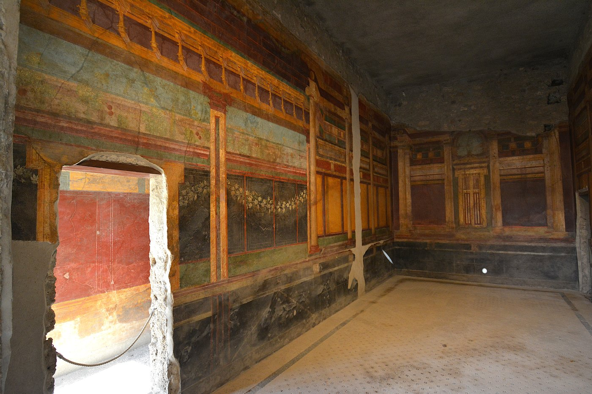
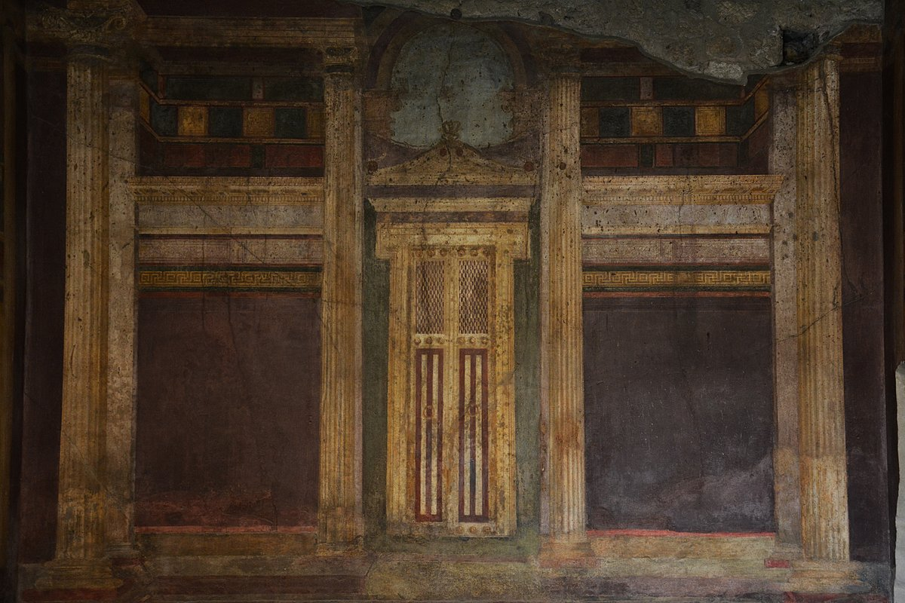

Villa of the Mysteries
Wall paintings · circa 60 B.C.E. · Second Style · Pompeii
Look closely at a room made to feel larger

Detail · a painted doorway

This opening is painted, not real. The artist uses lines, shadows, and overlapping shapes to make the wall seem to continue into another space.
Roman artists did not need to knock down a wall to make a room feel bigger. At the Villa of the Mysteries, they painted columns, ledges, and distant openings on flat plaster. Your eye reads the painted architecture as a space you could step into.
These paintings use the Second Style, a Roman wall-painting style that creates the illusion of looking beyond the room. The famous red room at this villa also has life-size figures, probably connected to the god Dionysus and a private ceremony.
Fresco (FRESS-koh)
A wall painting made by applying pigment to fresh, wet plaster. As the plaster dries, the color becomes part of the wall.
Illusionism
Making art trick the eye into seeing something that is not really there. These painted walls can feel like open space.
Second Style
A Roman wall-painting style that uses painted architecture and views beyond the wall to make a room seem larger.
- Find the edges of the real wall. Where does the painted architecture make it seem to open up?
- Look for columns, ledges, and shadows. Which simple tools make the painting look three-dimensional?
- Imagine standing in this room. How would the painted space change the way it feels?
Why this matters later
Roman artists used paint to create convincing spaces long before Renaissance artists developed linear perspective. In the Renaissance deck, you will meet Masaccio’s Holy Trinity, where a chapel wall seems to open into a deep stone room; Raphael’s School of Athens; and Michelangelo’s Creation of Adam, where the Sistine Chapel ceiling feels as if it opens upward.